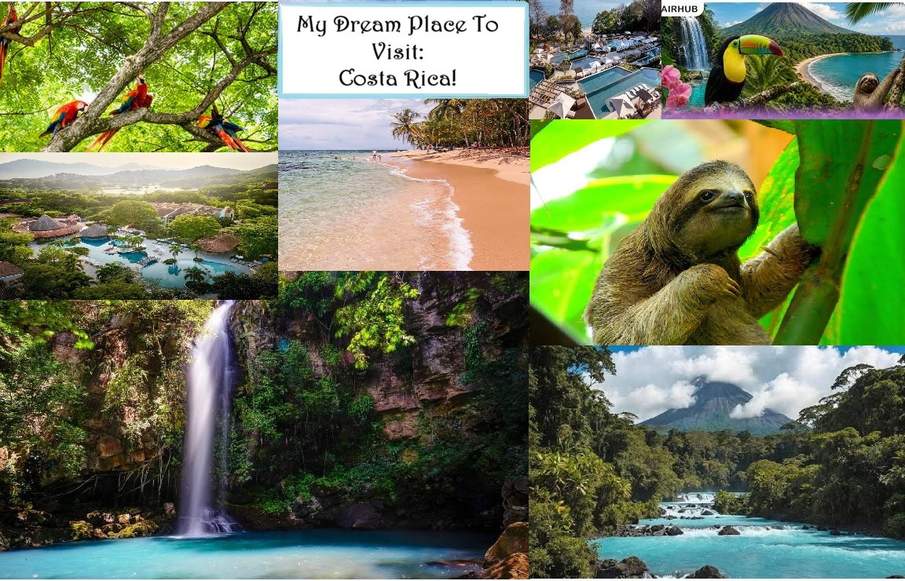

What I enjoy the most
I love how beautiful the beaches are in Costa Rica. The Rain Forests are also very beautiful.
Costa Rica is a tropical paradise known for its biodiversity and stunning landscapes.
My name is Amanda, and I am learning to build accessible, well-structured web pages. This is my first assignment in HTMLfoundations.
I love exploring new places and experiencing different cultures.
Going to Costa Rica has always been a dream of mine, and I hope to visit there someday in the near future.

I love how beautiful the beaches are in Costa Rica. The Rain Forests are also very beautiful.